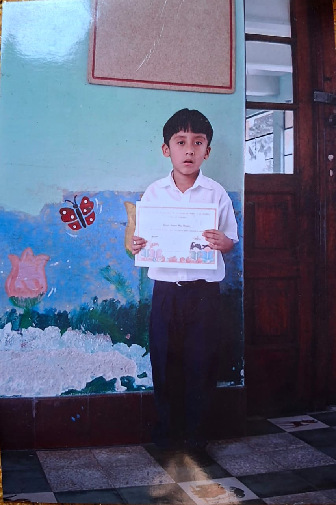
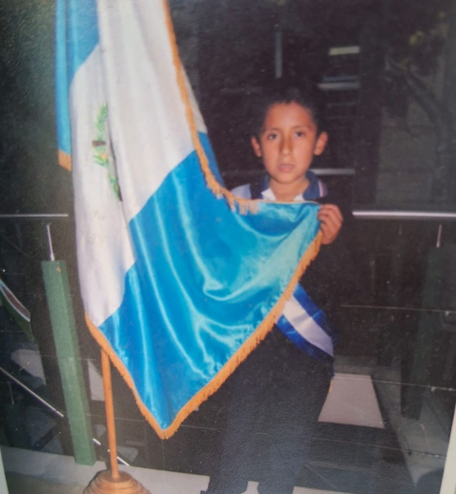
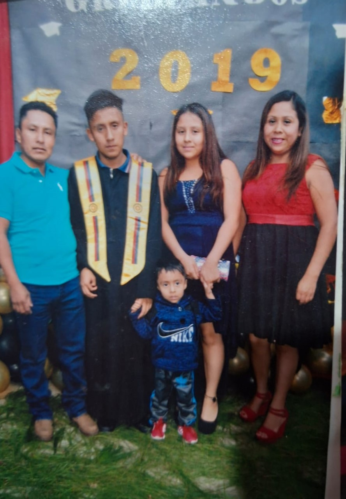

Empecé a estudiar, lo hice en el jardín de niños 20 de octubre, me recuerdo poco, pero de las cosas mas importantes es que en el primer día de clase llore, también me recuerdo de que mi mamá junto mi hermana pequeña me llegaban a dejar, en ese año también cada sábado temprano ella nos llevaba al campo Marte a entrenar ciertos deportes y actividades

Todo cambio para el 2011 mis padres tomaron la decisión de mudarnos, y lo hicimos donde había nacido, y en ese año entre a Primero Primaria y lo hice en el LICEO SANTA CRUZ de lo poco que me acuerdo son de unos amigos que pues les sigo hablando, pero no frecuente, la intención de mis papás fue siempre que mis notas resaltaran, para las fiestas del 15 de septiembre participe en 3 actividades, si no estoy mal fueron baile de marimba, dibujo y otro más, ahí siento que nació ese bonito sentimiento de ser competitivo. Además de que conocí a un de mis mejores amigos de 1ro a 6to primaria, actualmente no se mucho de él, pero siempre llevo lo buen amigo que fue conmigo, se llamaba Hamilton
Para segundo primaria seguía en el mismo colegio, aquí pues sigo con poca memoria de lo que me paso, pero conocí a uno de mis amigos más grandes hasta ahora, se llama Cesar, una persona muy buena, e inteligente, siempre “competíamos” para las primeras posiciones en los cuadros de honor, también se unieron otros compañeros en ese momento, pero no me recuerdo mucho.

En tercero primaria pues todo normal, aunque seguía en el mismo colegio cambiamos de sede, y pasamos a unas instalaciones mucho mas grandes, los amigos y compañeros seguían siendo los mismos
La nueva sede empezó a tomar una mejor forma, conocí a un buen docente que fue el que nos asignaron, una persona muy pilas en lo que realizaba, aunque actualmente no se dé el, además de que en ese año tuvimos mundial, recuerdo que en las golosinas venían tazos con imágenes de los futbolistas del mundial, con mis compañeros siempre intercambiar los repetidos y tratar de encontrar a Messi y Ronaldo (nunca los encontramos ). También me recuerdo ver la final en mi casa y junto a mi Papá, son momentos tal vez simples, pero el echo de tenerlo con cosas así, me hace feliz.
Cambiamos de docente, y fue mujer, docente al cual aún tengo comunicación (poca), los mismos amigos que tuve desde 1ro y 2do, unos iban otros venían, en ese año paso algo curioso ya que por molestar a un amigo, que fue Cesar, me castigaron para el recreo y no podía salir, y por lo necio que eh sido pues Sali del salón, al final fui a la cancha y por querer patear un balón no calcule y me caí, al final sangre en la cabeza y me llevaron a un centro donde me colocaron puntos, cosas de las cuales no se olvidan. Me recuerdo que al regresar de donde me colocaron los puntos ya me esperaban para irme a mi casa y mi mejor amigo en ese momento me ayudo y me fue a dejar hasta la salida, me llevo la mochila. Espero que le esté yendo bien en la vida.
Seguimos con la misma docente, aunque era una persona enojada, creo que fue de las mejores que podía prepararnos para lo que se venia y dio muy buenos consejos. Este año fue muy bonito en general muchos amigos nos separamos y otros pocos seguimos en contacto. Este año me entro la gana de competir en un concurso de Oratoria, siempre eh sido una persona que habla demasiado e improvisa también, la vergüenza la tenía, pero creo que me ayudo a mejorar la forma en la que me expreso, mis rivales no eran mas que mi hermana y Cesar, ellos ya tenían una experiencia previa, aunque en mi sentía que no llegaría a los primeros 2 lugares intente dar lo mejor, y para mi sorpresa gane el primer lugar, muchas veces uno no confía en lo bueno que puede llegar a ser. Actualmente no dejo de recordarles la manera en la que un novato le enseño a como competir :) Al final pude graduarme sin ninguna novedad
